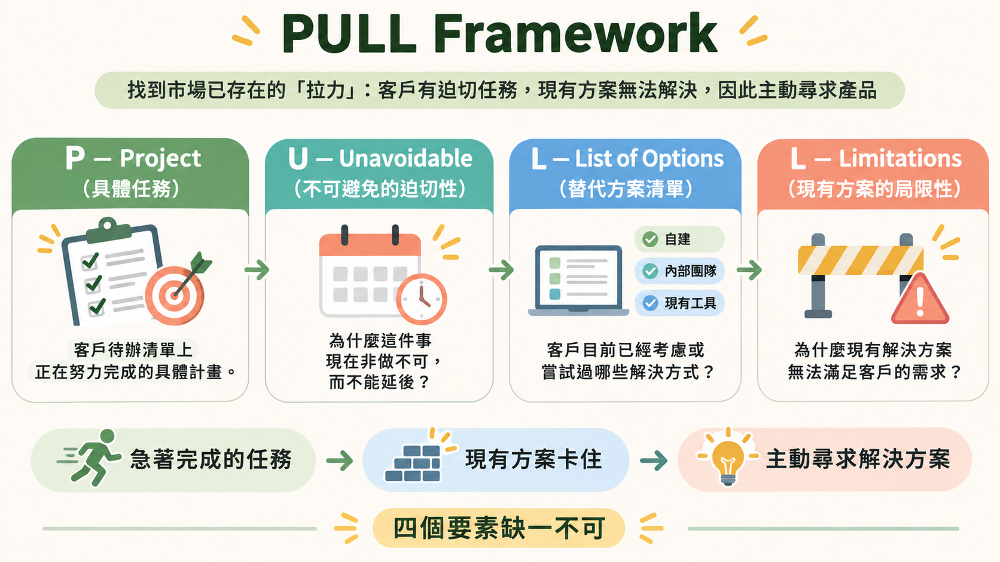

[筆記] 顛覆 PMF 傳統迷思：打造爆款產品的「拉力法則」與 3 個心法
傳統的 PMF 理論常強調「解決客戶痛點」，但現實是「有痛點不代表客戶會買單」。真正的 PMF（Product-Market Fit）不是靠說服客戶的 Push（推力），而是來自市場中本就存在的 Pull（拉力）。本文深入解析 PULL Framework 的四大要素，協助創業者與產品經理避開假性需求陷阱，打造真正讓市場主動搶購的產品。
原文連結：https://www.youtube.com/watch?v=19qrLchbQEc
一、核心觀念：PMF 來自 Pull，而非 Push
傳統 PMF 強調尋找痛點、提供差異化價值，但 有痛點不代表客戶會優先購買 。
真正的 PMF 來自市場中已存在的 「拉力（Pull）」 ：
- Push（推力） ： 努力說服客戶產品有價值、值得嘗試。
- Pull（拉力） ： 客戶手上有迫切進行的任務，現有方案完全無法解決，因此主動尋求產品解法。
客戶不是因為產品本身很有價值而購買，而是因為有重要任務急著完成，卻被現有方案卡住。
關鍵思維 ： Pull 存在於具體個人的優先事項，而非抽象的公司需求 。
二、PULL Framework：找到市場已存在的需求

PULL 架構由四個不可或缺的要素組成：
1. P — Project（具體任務）
客戶待辦清單上正在努力完成的具體計畫與目標。
- 不是「想購買招募軟體」。
- 而是「現在需要招募更多關鍵工程師」。
驗證問題 ： 你現在急著完成什麼任務？
2. U — Unavoidable（不可避免的迫切性）
客戶為什麼現在非做不可，而不能往後延期？
驗證問題 ： 為什麼這件事現在一定要完成？
3. L — List of Options（替代方案清單）
客戶目前已經考慮或嘗試過哪些解決方式？
常見替代方案包含：
- 自己手動處理。
- 交由內部現有團隊硬撐完成。
- 使用市場上現有的工具或通用軟體。
驗證問題 ： 你目前有哪些解決方案或替代工具？
4. L — Limitations（現有方案的局限性）
為什麼上述現有的解決方案無法滿足客戶需求？
驗證問題 ： 為什麼這些既有方案仍然無法根本解決問題？
PULL 的關鍵聯立條件
Project + Unavoidable + List of Options + Limitations 四個要素缺一不可。
當客戶有急著完成的任務，卻被現有方案卡住，就會形成 「緊繃的彈簧（Coiled Spring）」 。此時只要市場上出現能解除僵局的產品，客戶就會主動尋求合作。
案例對比：Jump AI 理財顧問筆記工具
- 理財顧問（具有強烈 Pull） ：
- P — Project ： 減少客戶會議後手動整理筆記與輸入 CRM 的時間。
- U — Unavoidable ： 必須嚴格遵守 SEC（美國證券交易委員會）相關法規與合規要求。
- L — List of Options ： 一般通用型 AI 會議筆記工具。
- L — Limitations ： 缺乏理財顧問專屬 CRM 整合與合規留存審核能力。
- 保險經紀人（缺乏 Pull） ：
- 雖然同樣希望減少會議筆記時間（Project），但缺乏法規強制記錄的迫切性（Unavoidable）。
- 現有的替代方案（List of Options），例如不寫或草草記錄，對他們而言已經足夠好，因此不存在必須突破的局限性（Limitations）。
記憶重點 ： 有痛點 ≠ 有迫切性 ≠ 有購買動機 。
三、產品開發：先驗證 Pull，再打造 MVP
1. 用兩頁簡報驗證 Pull Hypothesis（拉力假設）
在投入任何程式開發前，先建立清晰的 PULL Hypothesis，並製作兩頁簡報向潛在客戶驗證：
- 第一頁：描述客戶的 PULL
- Project ： 你目前正在完成什麼具體任務？
- Unavoidable ： 為什麼這件事現在必須完成？
- List of Options ： 你先前考慮過哪些替代方案？
- Limitations ： 為什麼現有方案無法滿足需求？
- 最後確認 ：「我理解得正確嗎？」
- 第二頁：提出概念性解決方案
- 展示如何更快、更低成本、更少阻力地協助客戶完成該任務。
- 最後確認 ：「這樣的方式符合你的期待嗎？」
2. 辨識真正的市場訊號
- 真正的 Pull 訊號 ：
- 客戶主動追問：「我們該如何開始合作？」
- 急著詢問產品何時可以上線使用。
- 積極主動討論合約與預算流程。
- 想立即推進下一步進度。
- 假性熱情（無 Pull） ：
- 口頭稱讚：「這產品非常有前景！」
- 評估說：「這可能幫公司省下很多成本。」
- 拖延回應：「請寄一份簡報給我們團隊內部評估。」
- 表態：「我們下個季度再找時間聊聊。」
觀察原則 ： 觀察客戶是否主動推進行動，而不是聽他口頭如何稱讚產品 。
3. 避免 Design Partners（設計夥伴）陷阱
早期設計夥伴可能提供大量產品功能反饋，卻往往沒有實質付費意願：
- 願意提供意見，不代表願意買單。
- 持續試用產品，不代表產品達成 PMF。
- 真正有迫切任務的客戶，唯一目標是儘速解除卡關、完成工作。
重點提醒 ： 切勿把產品回饋與使用活躍度，誤認為真正的市場拉力 。
4. Service-Shaped MVP（服務型 MVP）
先交付成果，再決定如何產品化。
不必一開始就急於打造完整的 SaaS 平台架構，而是先以「人工程式混合服務」形式替客戶解決任務。
運作方式 ：
- 對外提供能保證完成特定成果的專案服務。
- 幕後結合人工、AI 提示詞與簡易腳本混合交付。
- 在真實交付過程中，觀察客戶最在乎的交付細節與瓶頸。
- 最終才決定哪些高頻環節值得用正式程式碼自動化。
三個主要目的 ：
- 驗證真實 Pull ： 確認客戶是否急著要成果，以及是否願意真實掏錢交易。
- 管理客戶期待 ： 讓客戶聚焦於任務成果，而非挑剔尚未成熟的介面或系統功能。
- 確認自動化規格 ： 從實務交付的痛點中，找到真正值得花資源產品化的核心功能。
核心價值 ： 客戶要的是問題被解決的成果，而不是成熟複雜的軟體架構 。
四、早期銷售：Selling to Learn（透過銷售來學習）
1. Founder Magic Outreach（創始人魔法外展）
冷陌生接觸（Outreach）的目的不是直接推銷產品，而是透過創始人的真實個人特質引起好奇，開啟雙向對話。
- 核心原則 ：
- 訊息極度精簡，約
1～2句以內。 - 展現創始人的真實經歷、專長或獨特見解。
- 避免制式、冰冷的範本與 AI 推銷感。
- 不必過度刻意包裝複雜客製化內容。
- 以引發好奇心、促成深度會談為唯一目標。
- 訊息極度精簡，約
2. 30 分鐘 Sales Call（探索式銷售通話）
- 第一步：了解客戶為何願意撥空開會
- 開場直接請教：
「每天應該有很多人寄信找你，今天為什麼願意跟我開會？」
- 讓客戶親口說出目前內心真正卡住的 PULL。
- 開場直接請教：
- 第二步：贏得深入提問的權利（Earn the Right to Ask Discovery Questions）
- 根據對方回覆，進一步詢問：
「介意我先請教幾個問題，好更深入了解你們的現況嗎？」
- 取得明確許可後，逐一深入探索 PULL 四要素：
- Project ： 目前最急迫的具體目標。
- Unavoidable ： 為什麼非得在近期內搞定。
- List of Options ： 過去嘗試過哪些手段。
- Limitations ： 為什麼這些手段依然無法過關。
- 根據對方回覆，進一步詢問：
核心心態 ： Selling to Learn（銷售是為了深度學習市場），而不是 Selling to Push（強推產品） 。
3. 早期定價：Willingness to Transact（交易意願）
早期的定價目標不是追求極致利潤，而是驗證客戶是否具備真實的 「交易意願」 。
Pricing Talk Track（定價錨定話術） ：
利用過往合作的價格範圍進行錨定，而非直接丟出單一死板報價。
「我們有些輕量型專案大約是 8 萬美元，有些規模較大的全面部署會到 100 萬美元，多數專案落在兩者中間。你會怎麼評估我們這次的合作範圍？」
話術效益 ：
- 快速測試客戶對於解決問題的預算級距與交易誠意。
- 避免單一價格過高直接嚇跑客戶，或過低低估自身價值。
- 建立對等協商基礎，雙方共同定義專案範疇與合理預算。
五、三個核心心法（Mindsets）
1. Pull 屬於具體個人，不屬於抽象公司
不要籠統地尋找「某某產業或某某公司」需要什麼產品。必須鎖定 具體職務的角色，正在執行什麼個人無法獨力完成的優先任務 。
- ❌ 錯誤切入：把產品賣給 SpaceX。
- ✅ 正確切入：找到 SpaceX 的法務主管，她正急著在期限內處理一項合規審查，卻被既有工具卡死。
2. Pull 是被發現的，不是被創造的
市場拉力早在產品誕生前就已客觀存在。創業者與 PM 應從「發明家思維」轉為 「尋寶者思維」 ：
- 不是花費無窮力氣去教育、說服客戶相信問題存在。
- 而是主動搜尋市場上已經火燒屁股、卻找不到趁手工具的人。
心法重點 ： 不要試圖替客戶創造迫切性，而是去發現市場中既有的迫切性 。
3. PULL 四個要素必須同時成立
在評估每一次客戶機會時，持續檢視四項條件：
- P — Project ： 任務是否真的存在且屬高優先級？
- U — Unavoidable ： 是否有不能拖延的明確時間壓力？
- L — List of Options ： 客戶是否已在尋找或評估替代手段？
- L — Limitations ： 現有替代手段是否確實無法接受？
當發現 Unavoidable 不足 （客戶不急）或 Limitations 不足 （現狀尚可接受）時，千萬不要強行推銷，應果斷調整 Pull Hypothesis。
六、工作應用：PMF 驗證 SOP
- Step 1：鎖定具體客戶角色 ： 找到組織內真正扛責任的任務負責人。
- Step 2：建立 PULL Hypothesis ： 具體寫下 Project、Unavoidable、List of Options 與 Limitations。
- Step 3：透過兩頁簡報驗證 ： 第一頁核對拉力現實，第二頁展示概念解法。
- Step 4：觀察真實拉力訊號 ： 檢視客戶是否主動追問期程、積極爭取內部進度。
- Step 5：提供 Service-Shaped MVP ： 以半人工混合交付，快速解決核心卡點。
- Step 6：驗證 Willingness to Transact ： 確認客戶有實質付費意願，完成真實交易。
- Step 7：根據真實交付決定產品化 ： 僅對反覆驗證的高價值關鍵瓶頸投入軟體自動化。
七、PULL 訪談紀錄模板
|
|
八、最後記住
不要先打造了產品，才到處尋找需要它的人。
先找到急著完成任務、卻被現有方案卡住的人，再傾力協助他完成任務。
PMF 的精髓不是產品獲得了多少客套讚賞，而是市場中是否存在源源不絕的真實 Pull。
$$\text{PULL} = \text{Project} + \text{Unavoidable} + \text{List of Options} + \text{Limitations}$$
當四個條件同時具備，產品就不需要費力推銷，市場自然會主動拉動你的成長。
核心路徑 ： 發現既有 Pull ➔ 驗證 Pull 假設 ➔ Service-Shaped MVP 交付 ➔ 驗證交易意願 ➔ 軟體產品化 。